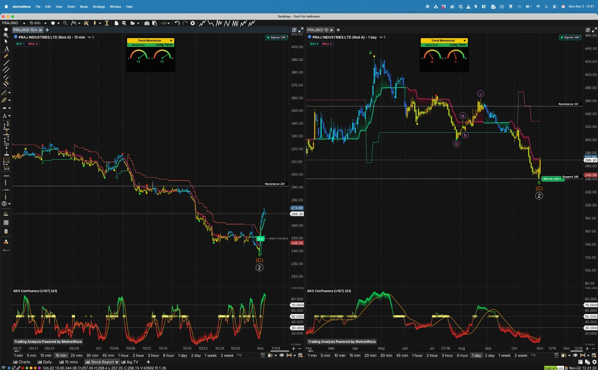

India's leading ethanol-technology supplier · Earnings trough: FY26 PAT −89% · Domestic ethanol build-out stalled post-E20 · Trading ~37% below its 52-week high
₹268.81 ▲ +11.2%
Report date: 2 Nov 2026 | Mkt Cap: ₹4,443 Cr (MarketSmith) / ₹4,946 Cr (Screener) | Book Value: ₹69.5/sh | MarketSmith Master Score: C
● Sentiment: Mixed — Hold consensus
● Momentum: Oversold bounce, unconfirmed
● Valuation: Rich on trailing (145x / 91x)
● RS Rating: 17 · EPS Rating 43
● Q2 FY27 PAT +20% YoY (EPS ₹1.26)
01
Company Overview
What They Do
Praj Industries is a Pune-based process-engineering and technology company best known for designing and building ethanol plants. In plain English: when a sugar mill or distillery wants to turn cane juice, molasses, grain or maize into fuel ethanol, Praj supplies the process technology, the equipment and increasingly the whole turnkey plant. It runs three reporting lines — Bioenergy (ethanol, compressed biogas, 2G ethanol, sustainable aviation fuel pathways), Engineering (critical process equipment plus the Praj GenX precision-fabrication subsidiary) and High-Purity Water (HiPurity Systems; water/ZLD for industry and, recently, a first semiconductor ultrapure-water contract). The three subsidiaries named in the CRISIL rationale are 100% owned.
FY26 consolidated revenue was ₹3,168 Cr (−1.9% YoY) and trailing-twelve-month revenue is ₹3,251 Cr — essentially flat for 18 months — while FY26 PAT collapsed to ₹24 Cr from ₹219 Cr (−89%). Exports were ~25% of Q1 FY27 revenue; CRISIL puts non-ethanol businesses at ~33% of revenue.
Key Competitive Advantage: Installed-base dominance in India's first-generation (1G) ethanol technology — share estimates range from ~60% to ~75% depending on source and date (see section 02) — plus a lifecycle-services annuity and a pipeline of pre-commercial technologies (2G ethanol, ethanol-to-SAF, Bio-isobutanol with Gevo, CBG). The flip side: the dominant domestic market has reached its E20 blending target and greenfield orders have slowed.
Order-Book Mix (30 Sep 2026)
Revenue-Mix Diversification
Rated 2 / 5
■■■■■
My rating, not a sourced one. Three-quarters of the order book is still bioenergy (and that share is rising: ~77% at Mar-26 on CRISIL's split vs 75% now on a different source, so treat the direction as unproven). Diversification is real in intent — data-centre fabrication, CBG, SAF, semiconductor water — but each is pre-scale or a single-counterparty framework.
What would lift it: data-centre and CBG converting to firm bookings, and non-ethanol revenue moving well above CRISIL's ~33%. Note the donut's ₹ amounts are my arithmetic (percentage × ₹4,455 Cr) from a secondary source; the exchange filing could not be read.
02
Competitive Advantage (Moat) Analysis
Dimension
Rating
Commentary
Brand / Track Record
Strong
Decades as the default Indian choice for ethanol plants, with a Brazil greenfield corn-to-ethanol order as a marquee overseas reference and a pipeline across Indonesia, Vietnam, Kenya, Argentina and others (management, Q1 FY27 call). Recognition is within a narrow buyer set — distilleries, sugar groups, energy majors.
Network Effects
Weak / N.A.
Project-engineering business; no platform dynamics. The nearest equivalent is the installed base feeding repeat service and performance-enhancer sales.
Switching Costs
Moderate
Process guarantees and plant-yield performance make customers reluctant to change technology partner mid-project, and lifecycle services (growing quarter on quarter, with better margins than projects, per management) deepen that. But a new greenfield order is competed afresh each time, and domestic greenfield demand is the part that has dried up.
Cost / Scale Advantage
Moderate / Unverified
Praj claims ~10% of the global ethanol-technology market ex-China (company decks), versus 6–8% in one older trade-press figure. No audited market definition. Margins do not show a cost edge: operating margin fell from ~10–11% (FY24–FY25) to ~4.5–4.9% (FY26/TTM), with CRISIL citing 10.1% to 4.7%.
Patents / Proprietary Tech
Moderate / Conflicting
Patent counts conflict: 300+ (2021 decks), 400+ (recent summary), 15 (CB Insights, likely an undercount), and "16 granted + ~79 pending" (Outlook Business, 2017). The "Praj Matrix" R&D centre could not be verified in searches. A new centre of excellence for advanced bioeconomy opened at SPPU in Aug 2026. Gevo gives Praj an exclusive India commercialisation pact for Bio-isobutanol (Bio-IBA).
Market Share (ethanol tech, India)
Conflicting
~70% (Outlook Business 2017 and a broker note) vs ~60–65% (a broker note) vs ~60% (recent Valorem factsheet) vs ~75% (Asian Investor and an older Valorem factsheet). Mid-range ~65–70% is the user's working figure. Management declined to quote a CBG share on the Q1 call.
What This Moat Does NOT Protect Against
A moat in ethanol technology protects share of a market, not the size of it. With E20 achieved, domestic greenfield inquiries now come mainly from deficit states (Tamil Nadu and Assam were named on the Q1 call), customers cite funding constraints, and the ethanol supply–demand balance is loose. Feedstock policy is also biting: zero sugar-juice and B-heavy molasses diversion for 2026-27, and grain as ~90% of feedstock, which squeezes distillery cash flows even where Praj's multi-feed technology is a fit. The moat also does nothing for the new verticals (data-centre fabrication, CBG, SAF) where Praj is a new entrant.
Synthesis: The moat is real but pointed at a mature market. Praj can win most domestic ethanol projects that get funded; the question is how many get funded. Upside needs either a higher blending mandate (BIS notified E22/E25/E27/E30 petrol standards in May 2026 — standards, not a mandate or timeline), international wins, or a new vertical reaching scale. None of those is yet visible in reported revenue, which has been flat at ~₹3,170–3,250 Cr.
03
Q2 FY27 Results (29 Oct 2026) & the 2 Nov Move
Q2 FY27 Revenue
₹849 Cr
+0.9% YoY · +18.6% QoQ
Operating Profit
₹52.4 Cr
−6.3% YoY · OPM ~6.2%
PAT
₹23.2 Cr
+20% YoY · EPS ₹1.26
Other Income
₹12.2 Cr
vs ₹5.4 Cr a year ago
Order Book
₹4,455 Cr
vs ₹4,589 Cr (Jun) · −2.9% QoQ
Reading the Quarter — Headline Beat, Thin Quality
PAT +20% on flat revenue is mostly below the operating line. Operating profit actually fell 6.3% (₹52.4 vs ₹55.9 Cr). Other income more than doubled to ₹12.2 Cr (₹5.4 Cr a year ago) and finance cost fell to ₹3.4 Cr (₹5.0 Cr). Material cost rose to ~56.7% of revenue from ~45.6%, which management ties to a costlier project mix.
The good side: sequentially the recovery is clear — revenue +18.6% QoQ from ₹716 Cr, OPM 4.2% to ~6.2%, PAT doubled from ₹11.6 Cr. Standalone revenue was ₹651.9 Cr (−5.0%) with PAT ₹45.4 Cr (+9.1%). A brokerage note cited by Whalesbook called revenue ~3% above its estimate.
Source caveat: the BSE results filing could not be opened (HTTP 403). All Q2 figures come from secondary sites (Screener, Whalesbook, Univest, Tradebrains) that agree with each other. A results tracker still shows a 14 Nov date, and one ICICI Direct snapshot (revenue ₹652 Cr, PAT ₹45 Cr) matches the standalone numbers, not consolidated.
Q1 FY27 conflict kept: Investing.com's "profit surges 119% to Rs 116 Crore" is a unit error — ₹116 million = ₹11.6 Cr. The +119% (transcript arithmetic ~+117%) is consistent; one headline says +33%, base unexplained.
2 Nov Jump — Cause UNCONFIRMED & Gen X Data-Centre Deal
2 Nov Price Action₹268.81 · +11.2%MarketSmith · Screener 1:33 pm: ₹269 (+11.50%) · prior close ~₹241.70 (date label suspect)
Volume38.9 lakh sh.+490% vs average (MarketSmith figure, unverified; MarketsMojo volume blank)
Cause of MoveNOT CONFIRMEDNo catalyst found. MarketsMojo calls it a stock-specific "relief bounce" after the fall to a 52-week low; results were 2 trading days earlier; Sensex was +1.22%.
Candidate TriggersPlausible, unprovenPost-results rebuild · CBG JV with BPCL (board OK 29 Oct, up to ₹100 Cr, 50:50) · oversold bounce
Gen X Data-Centre DealUS$52M (~₹500 Cr)Announced 3 Aug 2026 · some sources say US$50M (management, Q1 call: "minimum ~US$50M") · minimum committed value · ~2.5 yrs
Annualised Weight~₹200 Cr / yr ≈ 6%Of TTM sales ₹3,251 Cr (my arithmetic) · ~11% of the ₹4,455 Cr order book if booked in full
Counterparty / ScopeUnnamed global EPCPrecision-fabricated components and modules (Sahi calls it "cooling" — unconfirmed). Framework, phased: firm bookings only as customer confirms. Single counterparty.
Management Claims18 customers · ₹500–600 Cr18 global customers qualified; ₹500–600 Cr data-centre visibility next year. GenX not yet break-even (analyst question; management declined figures).
Reading it: ~6% of revenue is meaningful but not transformational, and the claimed ₹500–600 Cr next-year visibility would be well above the ~₹200 Cr/yr run-rate implied by the announced minimum. Treat the upside as management's claim until firm phase confirmations are booked.
04
Overall Sentiment & Momentum Prediction
Key Watch-Item
⚠ Order Conversion vs. a Depressed Earnings Base
Revenue and backlog have both been flat for ~18 months (backlog ₹4,300–4,600 Cr; revenue ~₹3,170–3,250 Cr). Q2 intake of ₹715 Cr (second-hand) is below Q1's ₹1,000 Cr and the backlog slipped to ₹4,455 Cr. Next evidence: Q3 order intake, firm Gen X phase bookings, and the Bio-IBA demo plant (due late 2026).
Overall Sentiment
MIXED consensus Hold
Street is split: MarketSmith shows Hold with 3 analysts (average target ₹352.67), Prabhudas Lilladher is Buy at ₹353 (2 Nov), an unnamed brokerage is Hold at ₹260, and MarketsMojo rates it Sell. Promoters unchanged at 32.81% for 12+ quarters; mutual funds rebuilt to 15.05% while FIIs trimmed.
Momentum Prediction
OVERSOLD BOUNCE — UNCONFIRMED
The stock fell to a ~₹240 low (RSI 4.6 on the daily) and rebounded +11% on 2 Nov on ~6x normal volume (unverified). Short-term gauges turned positive (+3/+3 on 15-min) but the daily gauges are still negative (−2/−1) and the price is below its 20/50/100/200-day averages (MarketsMojo). A bounce, not yet a trend change.
Framing note: This is a trough-earnings, low-relative-strength stock (EPS Rating 43, RS 17) bouncing off a technical washout. The bull case is a rebound off an unusually weak FY26 (consensus-type EPS ₹12.58 FY27e and ₹18.13 FY28e versus ₹1.30 in FY26); the bear case is that the order book, revenue and margins have given no evidence yet that the base is rebuilding. The forward estimates are only as good as that rebuild.
05
Sector Market Size
No sourced total-addressable-market figure was found for Indian or global ethanol/bioenergy equipment, so none is shown. The bars compare Praj's TTM sales and order book with two stated reference points (neither is a market size): management's ambition of ₹10,000 Cr revenue by FY30 (needs ~33% a year from FY26's ₹3,168 Cr, my arithmetic) and the Union Cabinet's GOBARdhan National Circular Bioenergy Scheme outlay of >₹23,000 Cr (FY27–FY36), a government spending figure rather than Praj's market. Management also says a 2% Bio-IBA diesel blend would be a >₹3,000 Cr project opportunity, but there is no mandate. Not researched: E20-and-beyond demand maths, SAF and CBG policy detail.
06
Shareholding — 4 Qtrs
Category
Dec'25
Mar'26
Jun'26
Sep'26
Δ
Promoters
32.81%
32.81%
32.81%
32.81%
▬ 0.00pp
FIIs
17.32%
17.74%
17.75%
16.75%
▼ 0.57pp
DIIs
13.64%
12.68%
14.09%
15.68%
▲ 2.04pp
Public / Retail
36.23%
36.77%
35.34%
34.77%
▼ 1.46pp
No. of Shareholders
4,06,848
4,00,397
3,83,086
3,72,037
▼ 8.6%
Source: Screener, consolidated shareholding. Reading it: promoters have not bought or sold in 12+ quarters; domestic institutions are rebuilding (DII 19.51% at Mar'25, 12.68% at Mar'26, 15.68% now; mutual funds 15.05–15.1% of that, per MarketSmith/Incred); FIIs gave back 1pp in the latest quarter. Retail holders fell from a 4.07 lakh peak (Dec'25). Conflicts: Anand Rathi shows Jun'26 FII at 4.24% versus Screener's 17.75% — likely a category error (FPI Category-I only); Incred's "DII 0.6%" is a narrow category, not total DII. Promoter pledge is nil per one aggregator only (Finology) — not confirmed from an exchange filing. Sep'26 official filing not located.
07
Stock Performance
Horizon
1M
3M
YTD
2 Nov
★ PRAJIND
−13.8%
−16.2%
−19.0%
+11.2%
Source: MarketsMojo (taken intraday on 2 Nov, before the day's full rally); Whalesbook says the one-month fall was ~21%, not 13.8%. 6M/1Y and index comparisons (Nifty, Midcap, Smallcap) were not sourced, so none are shown.
52-Wk High₹428Screener · MarketSmith table: ~428 · −37.2% from high at ₹268.81
52-Wk Low₹240Screener / MarketSmith table / chart support · MarketsMojo says ~₹244 (30 Oct) · +12.0% off ₹240
Conflict: MarketSmith's AI text quotes the 52-week range as ₹427.65 / ₹273, versus its own table's ₹240–428. ₹273 is not the low (the stock traded at ~₹240 as recently as 30 Oct–2 Nov); it is close to the 2 Nov intraday high of ₹273.90 on the chart. The ₹240–428 range is used here.
H1 FY27 revenue ~₹1,565 Cr vs ~₹1,482 Cr in H1 FY26 (+5.6%) and PAT ~₹34.8 Cr vs ~₹24.3 Cr (my arithmetic from Screener's rounded figures). Quarter is better than the trough but nowhere near the FY24 run-rate (₹283 Cr PAT, 11% OPM).
P/B = 268.81 ÷ 69.5. ROE 1.48% (Screener) vs 1.78% (Univest); ROCE 6.12% vs 5.22%.
Annual P&L — FY23 to TTM
Year
Revenue
Op Profit
OPM%
PBT
Net Profit
EPS (₹)
FY23
—
—
—
—
—
13.05
FY24
3,466
372
11%
377
283
15.42
FY25
3,228
314
10%
299
219
11.91
FY26
3,168
155
4.9%
50
24
1.30
TTM
3,251
147
4.5%
68
34
1.85
Screener consolidated; FY23 EPS from MarketSmith (other FY23 lines not collected). Conflict: CRISIL gives FY26 operating margin 4.7% (FY25 10.1%) versus Screener's 4.9% (10%); FY26 PAT ₹23.85 Cr vs ₹24 Cr is rounding. FY26 tax rate was an unusual ~52% (FY24 25%, FY25 27%).
Quarterly Trend — Last 5 Quarters
Quarter
Revenue
Op Profit
OPM%
Net Profit
EPS (₹)
Q2 FY26 (Sep'25)
842
56
7%
19
1.05
Q3 FY26 (Dec'25)
841
41
4.9%
−12
−0.67
Q4 FY26 (Mar'26)
845
23
2.8%
12
0.63
Q1 FY27 (Jun'26)
716
30
4.2%
12
0.63
Q2 FY27 (Sep'26)
849
52
6%
23
1.26
Screener, rounded; MarketSmith agrees on EPS and shows sales ₹841.6 / 841.5 / 844.6 / 715.8 / 849.0 Cr. Q3 FY26's loss shows in the TTM EPS: 1.26 + 0.63 + 0.63 − 0.67 = ₹1.85.
Revenue — 3 Years + TTM (₹ Cr)
Operating Profit & PAT — Annual (₹ Cr)
▬ Operating Profit ▬ PAT
★ Labelled PEG — three bases (my arithmetic):
PEG basis
Growth
P/E used
PEG
A. Trailing: FY25 → FY26 EPS (11.91 → 1.30)
−89%
~207x (₹268.81 ÷ 1.30)
n/m
B. 3-yr history: FY23 → FY26 EPS (13.05 → 1.30)
−53% CAGR
~207x
n/m
C. Forward: FY27e → FY28e EPS (12.58 → 18.13)
+44%
21.4x (FY27e)
~0.49flagged
Why basis C is flagged: FY27e ₹12.58 and FY28e ₹18.13 are estimates (MarketSmith, as supplied) built on an FY26 base of ₹1.30, so even a +44% year-on-year step is a recovery to roughly FY24–FY25's ₹12–15, not new growth. FY26 → FY28e is a ~14x rise (~274% a year compounded), a rebound figure I treat as n/m. PEG is not meaningful where growth is zero or negative, or driven by one-offs.
★ Earnings quality — what to weigh: TTM EPS of ₹1.85 and Screener's P/E of 91x cannot both be right on the same price: ₹268.81 ÷ 1.85 ≈ 145x, and ₹4,946 Cr ÷ TTM net profit ₹34 Cr ≈ 145x as well. Other sources print other numbers (Motilal Oswal, 6 Aug: 242x on an ₹5,967 Cr cap; Wisesheets 114x; Simply Wall St ~60x), all on different dates and methods and not mixable. Balance-sheet context is a genuine strength: cash ~₹611–616 Cr against ₹138 Cr of borrowings, and CRISIL rates it AA/Stable. The dividend (₹3.60 final proposed, ~277% of FY26 EPS; Screener's own text says 122%) is being paid out of reserves, not earnings.
09
Key Ratios — Industry-Contextualized
P/CFO · Market Cap ÷ Cash Flow from Operations Volatile
~25x (₹4,946 Cr ÷ ₹200 Cr FY26 CFO)
Note: FY26 CFO of ₹200 Cr is 8x reported PAT of ₹24 Cr — a flattering ratio because PAT was so low, and CFO swings widely: ₹199 Cr (FY24), ₹43 Cr (FY25), ₹200 Cr (FY26). On FY25's CFO the multiple would be ~115x; on the three-year average (~₹147 Cr) it is ~34x (my arithmetic). Free cash flow was ₹111 Cr, −₹1 Cr and ₹157 Cr. On MarketSmith's lower ₹4,443 Cr cap the FY26 figure is ~22x.
Working Capital · Cash-Conversion Cycle Customer-funded
−8 days (debtors 64 · inventory 60 · payables 132)
Note: Screener's FY26 cycle is negative: suppliers and customer advances fund the business, which is typical of project engineering. Debtor days were 68 / 63 / 64 over FY24–FY26. But management said on the Q1 call that slow project conversion has a "rubbing effect on collection of our dues"; no receivables ageing was found (FY26 annual report not available to this research). A negative cycle is also reversible: if order intake keeps slowing, advances unwind and the cycle turns.
Returns · ROE / ROCE Trough
~1.5% / ~6% (ROE / ROCE, Screener header)
Conflicts kept: ROE 1.48% (Screener header) vs 1.78% (Univest, FY26); ROCE 6.12% vs 5.22% (Univest FY26). History is far better: ROCE 29% (FY24), 18% (FY25); Screener's three-year average ROE is 11.7%. Returns this low are the central reason the trailing multiple looks so high. Among peers (section 15) only Praj is in single digits on ROCE; VA Tech Wabag is at ~21%.
10
Management Metrics
Leadership Succession (Corrected)
GAIKWAD MD · RAOLE JT MD & CFO
Shishir Joshipura left on 30 Jun 2025 (now an independent director at Ajax Engineering) and is not the current MD. Ashish Gaikwad was MD-designate from 3 Feb 2025 and MD since. Sachin Raole is Joint MD & CFO on a 5-year term from 30 Apr 2026 (postal ballot 99.89% in favour). A ChoiceIndia page still lists Joshipura as MD & CEO — stale.
Chairman / Promoters
32.81% flat 12+ qtrs
Dr Pramod Chaudhari is chairman per the brief; ChoiceIndia lists him as "Executive Director" — designation conflict, not confirmed from a filing. Pledge: nil per Finology only. Promoter name split (Pramod 24.97% / Parimal 7.83%) not independently verified.
Mgmt Remuneration as % of PAT
Not found
Executive remuneration for FY26 was not retrieved. For context, FY26 PAT was only ₹24 Cr, so any fixed pay package would be a large share. Raole's remuneration was approved at 98.80% in the postal ballot.
Tax Paid as % of PBT
25% → 27% → 52%
FY24 25%, FY25 27%, FY26 52% on PBT of ₹50 Cr. The FY26 spike is unexplained in the sources found; it is one reason PAT fell harder (−89%) than PBT (−83%).
Auditors & Compliance
MSKA & Associates
Replaced P G Bhagwat LLP at the Aug 2025 AGM (99.99% votes) on tenure completion; LLP from 13 Jan 2026. FY26 audit opinion and CARO not retrieved. No SEBI order, penalty or exchange fine found; FY25/FY26 secretarial compliance reports show nil deviations. RPTs had prior approval; amounts not retrieved.
Dividend vs Earnings
₹3.60 (180%)
FY26 final proposed (whalesbook; user says approved — not verified in a source read). Payout 278% / 277% (Screener table, Whalesbook) vs 122% (Screener text). FY25 was ₹6.00 at 50%. Yield ~1.35%. Board: 10 directors/2 women (FY25 AR); Ratnaparkhe joined as independent director on 29 Oct, Shukla resigned.
Credit ratings — India Ratings and other agencies:CRISIL AA/Stable (long-term) and A1+ (short-term) on ₹535 Cr of bank facilities, reaffirmed 19 Aug 2026, unchanged since May 2023; subsidiaries Praj HiPurity and Praj Engineering & Infra are AA-/Stable and Praj GenX is A+/Stable/A1 (cited in the Praj rationale, separate rationales not read). CRISIL notes GenX is not yet break-even and bio-energy execution has slowed post-E20. India Ratings (Ind-Ra): not found. ICRA: not found. CARE: not found. Acuite: not found — web search only, which is not proof that no rating exists.
11
Company Guidance — Last 3 Quarters & Credibility Checklist
What Management Has Said vs. What the Numbers Show
Claim / Guidance
Evidence to date
Status
Long-term: ₹10,000 Cr revenue by FY30 (the only explicit numeric guidance found; no FY27 revenue or margin guidance)
FY26 ₹3,168 Cr, TTM ₹3,251 Cr; needs ~33% CAGR from FY26 (my arithmetic). Revenue has been flat ~18 months; backlog ₹4,455 Cr.
Stretched
Data centres: ₹500–600 Cr visibility next year; 18 global customers qualified
Only one deal (US$52M / ~₹500 Cr over ~2.5 yrs, ~₹200 Cr/yr) is public; firm bookings only as the customer confirms phases.
Order received; construction under way. No blending mandate; mgmt: timing "we really don't know".
Pending
Bio-bitumen / PLA: "hope to get success… by end of this fiscal"
No commercial evidence found.
Pending
CBG: 50:50 JV with BPCL, up to ₹100 Cr from Praj, 8–10 plants (project cost ₹800–1,000 Cr)
Board approval on 29 Oct 2026; supportive Cabinet scheme (>₹23,000 Cr). Management itself calls the CBG market "limited" until GOBARdhan operationalises.
Early
Domestic ethanol greenfield recovery "till policies around higher blending mandates"
Q1: slow, funding-constrained; Q2 order intake ~₹715 Cr (second-hand) vs ₹1,000 Cr in Q1; international pipeline ~₹1,000 Cr (Brazil, Argentina, SE Asia).
Weak
Order Intake & Backlog Trend (₹ Cr)
Period
Order intake
Backlog (end)
Mar'25 / Q4 FY25
1,032
4,293
Mar'26 / Q4 FY26
658 (−36% YoY)
4,305 (one source dates it to Dec'25)
Jun'26 / Q1 FY27
1,000 (record in recent qtrs)
4,589 / 4,590
Sep'26 / Q2 FY27
715 (attributed to BSE filing; Whalesbook says "not reported")
4,455 (secondary source)
Conflict kept: the user's ₹4,590 Cr backlog is the June-quarter figure (63% domestic); the September figure is ₹4,455 Cr (37% export). H1 FY27 intake of ₹1,715 Cr compares with ₹1,608 Cr in H1 FY26 (+6.7%, my arithmetic) — intake is stable but not growing, and backlog has not risen through 18 months. Q1 FY27 bioenergy revenue of ~₹474 Cr was below the opening bioenergy order book, an analyst noted — conversion is slow.
Management-Quality Red-Flag Checklist
Warning Sign
Present?
Competitive displacement claim w/ named target
✗ No
Capacity built ahead of demand
Partial
Lack of capital-allocation clarity
Partial
External attribution w/o internal accountability
✓ Partial
Unrelated diversification
Partial*
Working-capital deterioration called "temporary"
✓ Watch
My judgements, not sourced scores. Weak results are attributed to customer funding and the ethanol supply–demand balance, with less "what we did wrong" language; dividend of ₹3.60 held while PAT fell 89%. *Data-centre fabrication and CBG are adjacent to Praj's process-engineering skills but new revenue lines with no track record (management: "just entered these segments"). A year-by-year guided-versus-delivered record could not be built: prior-year guidance was not found, and no concall transcript for Q2 FY27 was available.
Most Recent ActionsPL Buy ₹353 · Hold ₹2602 Nov 2026 · PL cut EPS 14.7% (FY28), 7.8% (FY29)
Conflicts: MarketSmith still carries PL as Hold ₹393 (7 Oct 2025); Whalesbook has PL at Buy ₹353 on 2 Nov 2026 — the newer action supersedes. The ₹260 Hold target is ~3% below the price and is struck on 21x Sep-2028E EPS, which implies EPS of ~₹12.4 — well under the ₹18.13 FY28e figure used elsewhere in this report, so estimates are far from agreed. The ₹260 note may be Axis Direct (unconfirmed). Earlier targets in the research: PL ₹389 (Jun'26), JPM Neutral ~₹308 (Feb'26).
13
Share Volume & Profile
Volume — 2 Nov38.9 lakh+490% vs average (MarketSmith; unverified) · implies a normal day of ~6.6 lakh (my arithmetic)
Bulk / Block DealsNone in Oct–NovFeb & Apr 2026 only: Microcurves, NK Securities, Jump Trading (HFT, buy/sell matched)
Free-Float ProfilePromoters 32.81%No pledge per one aggregator · public 34.77%
Reading it: a ~6x-volume +11% day lands close to a 52-week low and is the kind of tape that often marks capitulation or a short-lived squeeze; the data cannot say which, and the cause is unconfirmed. Volume is a single secondary figure — treat it accordingly.
14
Sector Rotation
Praj's sector — Industrials (Capital Goods) — is an early-to-mid expansion leader in the usual rotation framework: it benefits as capex budgets and private investment recover. Praj's own order book is the live read, and it has been flat for 18 months, so the stock is not currently confirming that phase. The phase call is a generic framework, not a sourced forecast.
₹ Cr / TTM. One source (Screener consolidated pages), all stamped 2 Nov, 1:33 pm (year not printed). P/E (calc) = price ÷ TTM EPS; Screener's own P/E shown to preserve conflicts (Isgec 26x vs 35x calc, Thermax 68x vs 63x — minority-interest effect suspected, unverified). Praj: 91x vs 145x as above.
Reading it: Peers were chosen for business overlap: Thermax (broad cleantech/bioenergy process equipment, sector bellwether), Isgec (direct competitor in sugar/ethanol/distillery EPC, similar size) and VA Tech Wabag (process-EPC order-book model). Praj is the most expensive on earnings (145x vs 29–63x) and the weakest on returns (ROCE 6% vs 11–21%) — a premium for trough earnings, not growth. On sales it is not expensive: 1.5x versus 0.9x (Isgec), 2.8x (Wabag) and 3.4x (Thermax), because its net margin is ~1% (Wabag ~10%, Thermax ~5.5%, Isgec ~3%, my arithmetic). Not chosen: GMM Pfaudler (weak overlap) and Triveni Engineering (a customer-type, not an equipment peer).
16
Risk Analysis
Category
Severity
Detail
Demand / Policy
High
E20 achieved, so domestic greenfield ethanol has frozen; inquiries are limited to deficit states and constrained by customer funding. E22–E30 are BIS standards only (May 2026), with no mandate or timeline; one report of "E21 by 2027, E25 by 2029" is unverified. Feedstock: zero sugar-juice diversion in 2026-27, FCI rice capped at 7.2 mn t, maize demand +40–50% risk and USDA seeing a 10% drop in India's maize output — distillers are asking for a 9% price hike. Bull twist: grain shift favours Praj's multi-feed technology.
Earnings / Valuation
High
FY26 PAT −89%; TTM P/E ~145x (Screener 91x) on ROE of ~1.5%. Q2's PAT growth leaned on other income and a lower finance cost while operating profit fell. Forward EPS of ₹12.58/₹18.13 requires a roughly 10–14x rebound from FY26 and is not corroborated by the ₹260 Hold note's implied ~₹12.4 EPS. Morningstar rates uncertainty "High".
Execution / Funding
Medium-High
"Funding-related issues persist… extended project execution cycles"; slow conversion hurts collections (management). Export mix shifted to lower-margin African executions in Q1. No receivables ageing, hedging policy or customer-concentration data found.
New Verticals
Medium-High
Gen X data-centre deal is a minimum-value framework with one unnamed EPC counterparty; GenX is not yet break-even. Bio-IBA, SAF, bio-bitumen and PLA are pre-commercial and there is no Bio-IBA mandate. CBG scale depends on the GOBARdhan scheme operationalising; management calls the market "limited" until then.
Data Quality
Medium
The BSE Q2 filing and the PL Capital report (15 Aug) could not be read; Q2 intake and backlog are second-hand. Market-cap, 52-week-range and volume figures differ between MarketSmith, Screener and MarketsMojo. The FY26 annual report (audit opinion, RPTs, remuneration, receivables) was not available.
Tariffs / FX
Low-Medium
Exports ~25% of Q1 revenue and ~37% of backlog; only older (Aug 2025) tariff commentary found, and a US E15 move is a tailwind. No Praj-specific hedging data found.
Two-sided check: the balance sheet is not the problem — cash ₹611–616 Cr vs ₹138 Cr borrowings, interest cover ~10x, CRISIL AA/Stable, and the CRISIL upgrade trigger is operating margin above 12%. Risk is earnings power and growth, not solvency.
Downgrade trigger on record: CRISIL says a downgrade would follow sustained revenue decline, operating margin below ~8–9% or debt-funded capex/acquisitions. The Q2 margin of ~6.2% and TTM ~4.5% are already below that margin threshold, so the rating relies on the strong liquidity cushion — worth watching. MarketsMojo rates the stock Sell (7 Sep 2026).
Technical Analysis
17
Technical Ratings & Momentum
Relative Strength Rating (MarketSmith India)
17
Out of 99 — Laggard / bottom ~17th percentile
An RS of 17 means PRAJIND has trailed ~83% of the market over the rating window — consistent with a −19% YTD return and a −37% drawdown from the 52-week high. O'Neil methodology treats low-RS, low-EPS stocks as laggards; the 2 Nov bounce does not change the rating on its own. The constructive reading is mean-reversion: the weakest ratings coincide with the washout low.
Synthesis: Master Score C. EPS Rating 43 (earnings still rebuilding), RS 17, Acc/Dis D+ (more distribution than accumulation) and a group ranked 119 of 197 (the user's figure for MarketSmith's "NSE-Bldg-Heavy Construction" group — not independently verified, paywalled). This is the profile of a stock that is out of favour, not one the market is accumulating.
William O'Neil Score Breakdown
EPS Rating
43
WEAK
Price Strength (RS)
17
POOR
Acc / Dis
D+
DISTRIBUTION
Group Rank
119 / 197
BOTTOM HALF*
Master Score
C
AVERAGE
MotiveWave Trend-Momentum Gauges (2 Nov 2026)
Timeframe
Short Term
Long Term
Signals
Daily
−2
−1
Buy 0 / Sell 0
15-minute
+3
+3
Buy 1 / Sell 0 (Buy tag 2 Nov, 09:30)
Scale −5 to +5. The short-term timeframe is positive; the higher timeframe is still negative and has no signal — the standard setup for an early bounce that has not yet been confirmed on the daily chart. Also read from the chart: daily RSI tag 4.6 at the ₹240 low.
18
Elliott Wave Analysis (MotiveWave)
Degree count (the user's legend, applied exactly as labelled):orange = Intermediate · green = Minor · circled roman = Minute · circled numbers = Primary. On this chart the labels at the low read: green "5" (Minor), orange "(C)" (Intermediate) and a white circled "2" (Primary), on both the daily and 15-minute charts. This is the user's count, not an independent one.

Wave Structure Interpretation
1D Chart
The daily chart carries the labels 5 / (C) / circled 2 directly under the ~₹240 low: a Minor-degree 5 completing an Intermediate (C), which in turn would complete a Primary-degree wave 2 correction. En route, the chart also shows circled lowercase a, b, c (pink) between roughly Aug and Sep, plus a circled "0" at the early-Aug low; circled lowercase letters are not in the supplied legend, so no degree is assigned to them here. A green "4" is printed at the ~₹428 top. I did not reconcile that "4" with a Primary 2 correction beginning at the same high — the user's count should confirm it. Price closed at ₹268.81 after tagging the ₹240 support (RSI 4.6 at the low), with resistance at ₹351.
15m Chart
The same (C) / 5 / circled-2 labels sit at the low, followed by a sharp impulsive-looking rally with a "Buy" tag on 2 Nov at 09:30 and a high of ~₹273.90. The nearest 15-minute resistance is ₹291 (the shelf before the late-October breakdown). Gauges are +3/+3 here against −2/−1 on the daily.
Synthesis
On the user's count, a Primary 2 correction appears complete if ₹240 holds; a Primary 3 would be the next leg up, which is the bullish implication. Two-stage discipline: this is the PINK anticipation zone (washed-out RSI, short-term gauges and Buy tag turned up) — not yet GREEN. Confirmation I would want: a close above ₹291 and a daily gauge/Buy signal turning positive. Upside reference levels are ₹351 (daily resistance), then overhead supply zones at ~₹359–384 and ~₹423–445 above the market. A decisive move below ₹240 would put the Primary-2-complete reading in doubt. No wave-projection targets were computed.
19
Recommendation, Support & Resistance
★ Recommendation
WATCH — ANTICIPATE, ACT ONLY ON CONFIRMATION
Bull case: washed-out price at a Primary-2 low on the user's count, AA/Stable balance sheet with ~₹611–616 Cr of cash, earnings off a trough (Q2 EPS +20%), a Gen X data-centre deal (~6% of revenue), CBG/Bio-IBA/SAF optionality and forward EPS far above trailing. Bear case: flat revenue and backlog for 18 months, domestic ethanol freeze, 145x trailing P/E with 1.5% ROE, RS 17 / EPS 43, thin earnings quality in Q2, and a cause for the 2 Nov jump that nobody has confirmed.
● PINK (now): Oversold, support at ₹240 held on 2 Nov, 15-min gauges and Buy tag positive; daily still −2/−1. Anticipation only.
● GREEN (trigger): close above ₹291 with the daily gauges turning positive / a daily Buy signal, then follow-through toward ₹351. Failure: close below ₹240.
Next catalysts: Q3 FY27 results and order intake; firm Gen X phase bookings; Bio-IBA demo plant (late 2026); the BSE Q2 filing and Q2 call transcript, which should replace the second-hand numbers here.
Daily resistance · near MarketSmith avg target ₹352.67
Major
₹359–384
Overhead supply zone
Supply
₹423–445
Overhead supply zone · 52-wk high ₹428
Supply
Disclaimer: This report is prepared using publicly available data from NSE, BSE, Screener.in, MarketSmith India, CRISIL, MarketsMojo, Whalesbook, company transcripts and releases and other public web sources as of 2 Nov 2026, and from the author's own MotiveWave Elliott Wave analysis. Several figures (Q2 FY27 order intake and backlog, the 2 Nov volume, market capitalisation and the group rank) come from secondary or unverified sources and are flagged where used; the BSE results filing could not be read. Price, volume and financial figures should be independently verified. Credit ratings: CRISIL AA/Stable and A1+ reaffirmed 19 Aug 2026 was found; India Ratings, ICRA, CARE and Acuite ratings were not found (absence in a web search is not proof of no rating). Ashoke Kumar Seth is not a SEBI-registered research analyst. This is not investment advice; always consult a licensed financial adviser before making investment decisions. All figures in ₹ Crore unless stated otherwise.